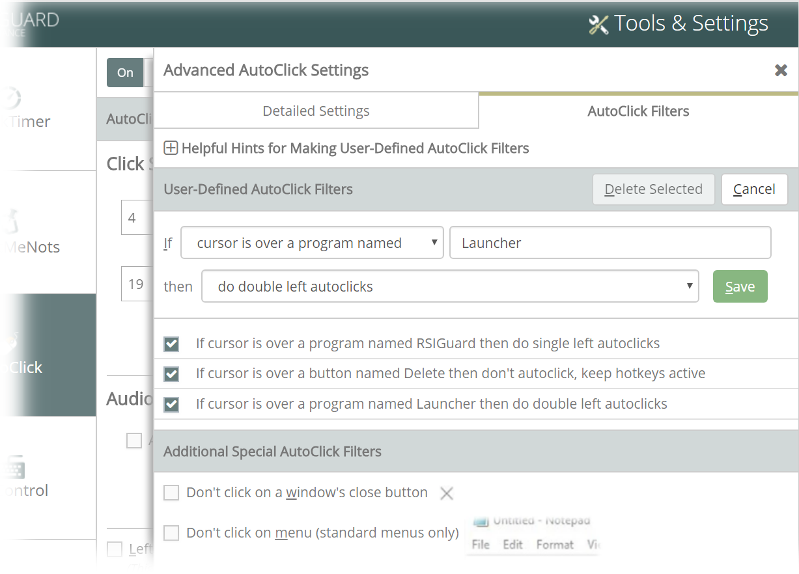
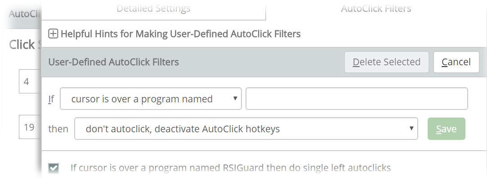
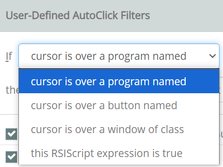
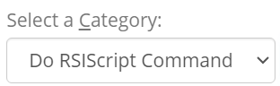
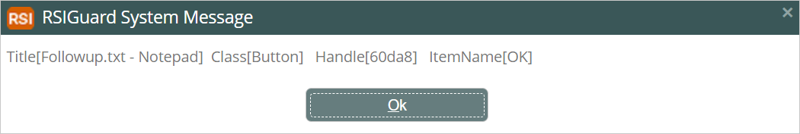
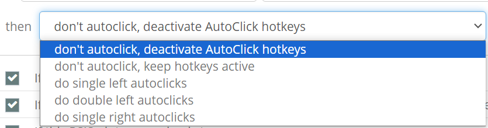
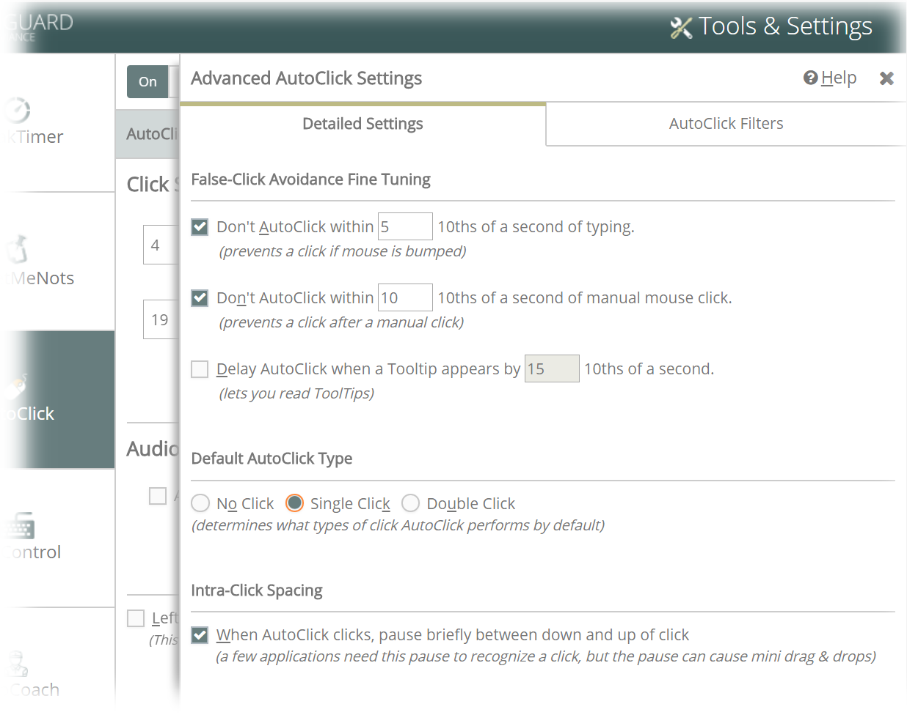

AutoClick is a feature designed to lessen strain associated with mousing. Here are 3 ways you can use AutoClick, along with KeyControl, to reduce mouse strain.
When you move the mouse to a new location, AutoClick automatically clicks for you.
Each time you move the mouse and then stop, the mouse automatically clicks. This means you no longer need to grasp the mouse or hold your finger in a static position over the mouse button waiting to click. The lack of fine motor activity significantly reduces your risk of developing injuries that would otherwise result from such highly repetitive movement. Depending on your overall exposures, this may significantly reduce your risk of injuries such as carpal tunnel syndrome, de Quervain's syndrome or tendinitis. This feature requires some time to adapt since you don't expect mouse clicks to occur every time you move the mouse. After a short time, most people find that they acclimate to a new way of working. The benefit is that you not only eliminate the stress of clicking but also eliminate the static postures associated with mouse use. Mouse usage is a highly repetitive fine motor task and is believed to be a common cause of RSI. We highly recommend trying AutoClick.
By pressing a KeyControl hotkey, you can perform a single, double-, or triple-click, or a right-click.
By default, AutoClick's automatic clicks are single left-clicks (though this is adjustable). At times you will want some other kind of click (e.g., double- or right-click). KeyControl hotkeys let you define keyboard shortcuts to do all common click maneuvers with a single keypress.
KeyControl's DragLock hotkey will hold the mouse button down until you press another key (or click the mouse). This lets you drag to select or move things without the strain of holding the mouse button.
One of the most straining actions you do on a computer is moving a pointing device while holding down a button for "dragging" or "selecting". The DragLock hotkey feature allows you to position the mouse (or another pointing device) where you want to start the drag or selection, tap a hotkey, and then drag the mouse without having to actually hold the button down. Clicking the mouse or pressing any key (except the arrow keys) will end the drag. During a drag, the arrow keys allow you to move the mouse cursor in a more controlled way (separating horizontal and vertical motion). This can be very useful and help people with disabilities to do mousework more easily.
Trigger Time - The mouse pointer must be still for at least this period of time before AutoClick automatically clicks. The length of time is shown in the Settings screen in tenths of a second (e.g., 4 = 4/10ths of a second). Set this to a lower number (e.g., 4) as you become more adept at using AutoClick to make clicks occur more rapidly. Set this number higher while you learn to use AutoClick (e.g.,8) or if you have a disability that limits your control of the mouse position.
Trigger Distance - The mouse pointer must move at least this many screen pixels after an automatic click before it will click again. This prevents automatic clicks if the mouse jitters or wiggles a few pixels after you let go of it. If your mouse has a tendency to slide when not in use, increase this number. If your mouse cord pulls your mouse when you release it (causing unwanted AutoClicks) you may benefit from using a cordless mouse, a mouse-pad with a rougher surface, or an alternate pointing device like a trackball or touchpad.
Audio feedback for AutoClicks - By checking this option, you will hear a sound each time AutoClick clicks. You can select whether AutoClick makes a simple system beep through your computer speaker (the same sound for all clicks but no sound card is required) or unique sounds for each click through your sound card (requires a sound card with speakers).
Visual feedback for AutoClicks - If enabled, AutoClick will show visual pointers that indicate that AutoClick is active, and remind you when AutoClick is about to automatically click. This is very helpful for learning AutoClick, especially if you do not have the audible clicks setting enabled.
Left-Handed Mouse Configuration - Check this option to reverse clicking logic for left-handed mouse usage. Checking this setting also automatically changes Windows to the left-handed mouse configuration for you (normally available in the Windows Control Panel).
AutoClick Filters
Click the Advanced link to open the Advanced AutoClickSettings window. Click the AutoClick Filters tab.

AutoClick Filters allow you to change AutoClick's behavior in certain programs or over certain buttons. For example, the 3 filters shown in the image above change AutoClick such that:
When the mouse cursor is over the main RSIGuard window, AutoClick will always do single left clicks, regardless of what the specified default click type is. If you specify that AutoClick's default click is no click, then you can add a separate rule for each program for which you wish to individually enable AutoClick.
When the mouse cursor is over a button with the text "Delete" it will not click. Note that this kind of filter does not always work over buttons where the specified word is drawn as an image. You may need to test this to be sure if the filter can detect the text on the button you are trying to exclude.
When the mouse cursor is over a program named "Launcher", it will do all automatic clicks as double clicks.
You can also specify 2 other special filters that prevent AutoClick from clicking on an application's "Close Window" button or on an application's menu (standard menus only).
To add a new custom filter, click Add New AutoClick Filter. The following window opens.

This window guides you through the process of selecting:
What condition triggers this filter.
What to do when the cursor is over the specified item within the specified category.
The first item to edit is the "If" field. It lets you specify the category of the condition that will trigger the filter. The drop down lets you select one of 4 options:

For the first 3 options (the "cursor is over a" options), you complete the condition's definition as follows:
cursor is over a program named: the filter will engage if the specified name appears anywhere in the title bar of an application. For example, if you enter "Word", this will trigger the filter for "Microsoft Word". If the name begins with an '!', the filter will only engage if the match is exact (e.g., "!Word" matches "Word", but does not match "Microsoft Word"). While you are creating a new filter, you can hover over any open window and the name of that window will automatically be filled in. You may want to edit the result to be more generic. For example, if it captures "Notepad - MyFile.txt" and you wanted to filter any time Notepad was open, you could edit it to just "Notepad". But if you want it to only filter if you are viewing MyFile.txt in Notepad, you'd keep all of the captured text.
cursor is over a button named: the filter name comes from a "window name property". This works for some buttons, as well as things that aren't actually buttons (e.g., text areas, pictures, etc.) This often varies for items within a window, so, while 'program' can be used to make a filter that applies to a whole application, 'button' can be used to filter AutoClicks over particular regions in a window. While you are creating a new filter, you can hover over any object in any window, and the name of that item will automatically be filled in.
cursor is over a window of class: the filter name comes from the underlying objects "window class". This is a name application programmers can give to objects within programs. It is often not a meaningful name to an end-user, but at times can help differentiate items well for AutoClick filters. It is useful in many of the same situations where 'button' would work, but depending on the program, one or the other might work better. While you are creating a new filter, you can hover over any object in any window and the "window class name" of that item will automatically be filled in. If it uniquely appears for the object you want AutoClick to behave differently for, then this may be the right choice.
The 4th option is "this RSIScript expression is true". This allows for more complex conditions to trigger an AutoClick Filter. Most often it is used with the $AppAtPoint() command in RSIScript, but it's not limited to that. As an example, say there is a button "Done" in an application called "3D Builder". When you press it, a 3D printer starts printing. You don't want AutoClick to click this Done button. But you do want AutoClick to click Done buttons in other applications. You could select "RSIScript expression" and enter RSIScript like:
This expression uses $appatpoint() which asks the operating system about an object at a point. Because it uses cx,cy, it indicates that it wants to know about the object behind the mouse cursor. The first call to $appatpoint() asks for the name of the program that the mouse cursor is over, and the second asks for the button the cursor is over. The expression $contains() is true if the program name contains "3D Builder" (so it would match "3D Builder - MyProject.3db"). The expression $equal is true if the button is named "Done" exactly. The $and() expression is true if both of the expressions it contains are true. So in total, this script says "if the mouse is over a program whose title bar includes '3D Builder' and a button named Done" then the AutoClick filter is triggered.
RSIScript lets your create complex expressions, and it can be tricky to know what program/button/class names will achieve the behavior you want. To help, you can create a hotkey you can press to show values under the mouse cursor. For example, you could create a keyControl hotkey that is of category "Do RSIScript Command":

Then, for the command, enter something like:
msg text Title[$appatpoint(cx,cy,title)] Class[$appatpoint(cx,cy,class)] Handle[$appatpoint(cx,cy,handle)] ItemName[$appatpoint(cx,cy,itemname)]$recursive(0);msg send
Then when you press the hotkey, it will show something like:

These values show what the operating system sees at the point on the screen where the mouse cursor is when the hotkey is pressed.
Next, you select one of 4 options for the "then" field to indicate what to do if the condition is true.

Most commonly, you want to prevent an AutoClick and choose the first option. But there are times when the other 3 options can be helpful too.
Finally, click the Save button to save your filter.
Advanced Settings
The window below shows the advanced options for further fine-tuning of AutoClick.

Don't AutoClick right after typing - This lets you prevent AutoClick from clicking while you are typing. If you bump the mouse or move the cursor out of the way to read something you just typed, AutoClick knows not to click.
Don't AutoClick after a regular mouse click- When you click the mouse by pressing the button yourself, AutoClick momentarily shuts off. After the preset time has passed, automatic clicks can occur again. Thus, if AutoClick is interfering with something, you need only do the clicks yourself and AutoClick won't interfere.
Delay AutoClick for ToolTips- When you pass the mouse over some items, helpful tips called ToolTips pop up. Clicking the mouse makes them go away, so with this option checked, AutoClick will delay its Automatic click for the amount of time you specify so that you can still read the tip. If you don't care about ToolTips, uncheck this and AutoClick will click faster.
Default AutoClick Type- This defines what an automatic click will do assuming no AutoClick filter overrides it. Normally, this is set to Single Click. If you wish to specifically enable AutoClick *only* for certain programs using AutoClick filters, you'd set this to No Click. Then AutoClick won't click on any application you haven't specifically enabled with a filter. Only in rare situations would you want to set this to Double Click.
AutoClick Hotkey Operation- There are two ways to use KeyControl's AutoClick Hotkeys. In the Immediate mode, pressing the hotkey causes the mouse click to occur immediately after you press the hotkey. In the Override mode, pressing an AutoClick hotkey changes what the next automatic click will do, but the hotkey doesn't actually perform the click.
Intra-click Spacing - This setting defines if there should be a tenth of a second pause between the down and up portion of an autoclick. Some applications will ignore automatically generated clicks if there is no time-space between the down and up portions (so this is the default). However, the pause can lead to short drag and drop operations if just as the autoclick occurs you move the pointing device. If you do not use one of the rare applications that require a pause, unchecking this box eliminates unintended drag and drops.
Hotkeys for Clicking the Mouse
AutoClick clicks the mouse for you just by moving the mouse. But sometimes, it can be helpful to use hotkeys to click the mouse for you (for example if you want to click multiple times in one spot without moving the mouse). You can set up hotkeys to click, right-click, double-click, drag and drop, and more. Visit the KeyControl settings page for more information.
 menu of the main RSIGuard window and select Settings.
menu of the main RSIGuard window and select Settings.
 to enable or disable AutoClick.
to enable or disable AutoClick.